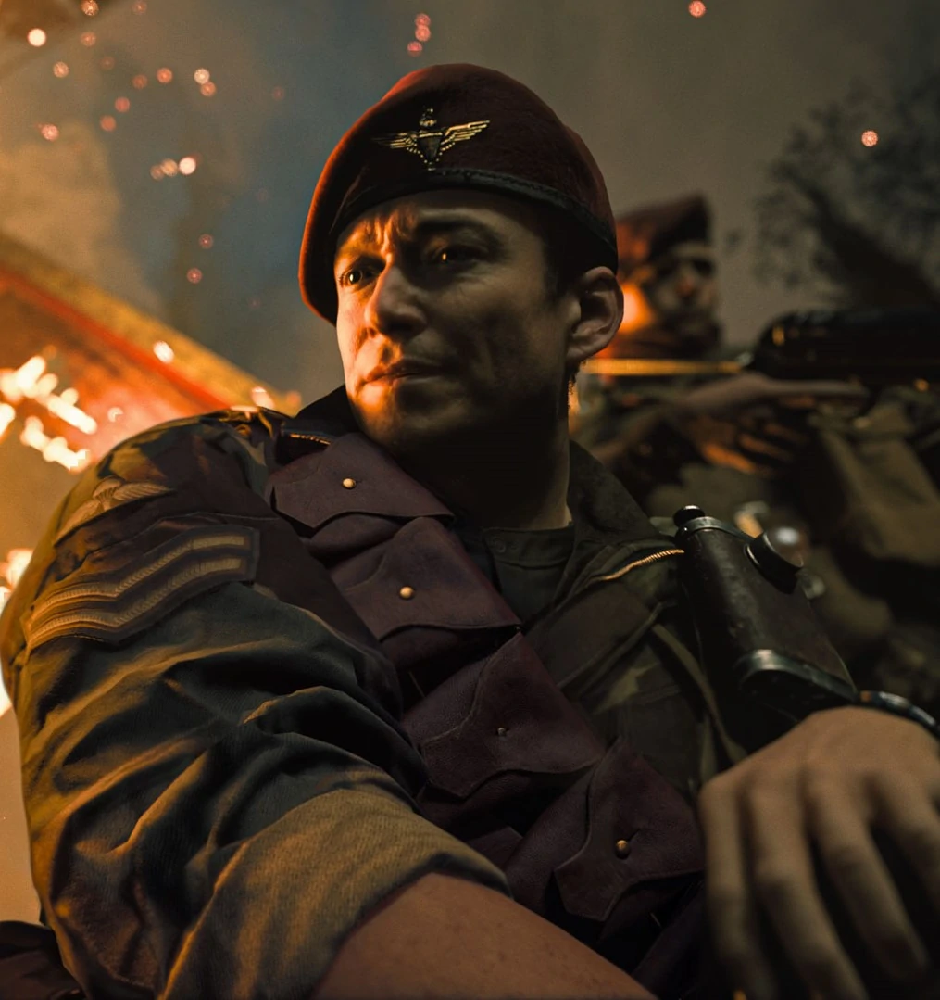

CHARACTER INFORMATION

Although he shares the same rank as his squad mate, Arthur Kingsley, Sergeant Richard Webb is Kingsley’s right-hand man, friend, and confidant. He knows his country needs him for the war, but he sees no honor in the duty. Rather, he sees soldiering as a job that must be done if there is any hope of life returning to normalcy.
Webb grew up in a family of academics, following in his parent’s footsteps in pursuing a professorship track at the university where they worked. In doing so, he had no intention of fighting in World War II; he felt secure that his graduate work would make him exempt from service. However, the draft called for him and he reluctantly joined the army.
With no illusions of glory nor passion to volunteer for a high-risk assignment, Webb often takes a cautious and calculated approach to every conflict, using his intelligence based in realism to come to a correct decision. Indeed, Webb believes his choice is always right, and his stubbornness derails discussions just as much as his perceived pessimism for how a situation could go wrong.
When Wade Jackson is thrown into the cell with the rest of the task force, Jannick Richter comments on how Kingsley lied to him by saying that he was dead. Kingsley claims that they didn't know he was still alive, but Richter does not fall for the illusion. Having decided to punish the group, he grabs a guard's Luger and executes Webb with a shot to the face, to the horror of Kingsley.
Kingsley would later vow to kill Richter for the death of his friend. He eventually does so after managing to unlock the cell doors with the help of Riggs, stabbing Richter in the shoulder and leaving him to bleed out.